| Ø100mm LED Revolving Warning Light Max.90dB | S Series (Ø100-125) | 32 |
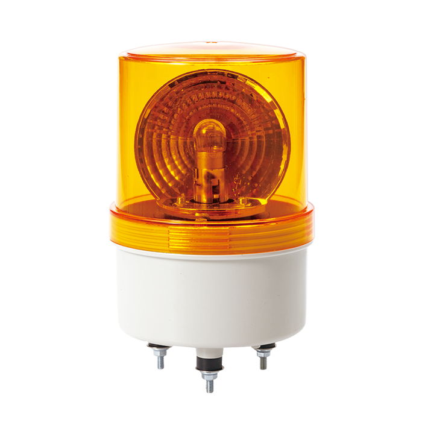 S100US Series (Ø100-125) | Ø100mm Bulb Revolving Warning Light Max.90dB | S Series (Ø100-125) | 32 |
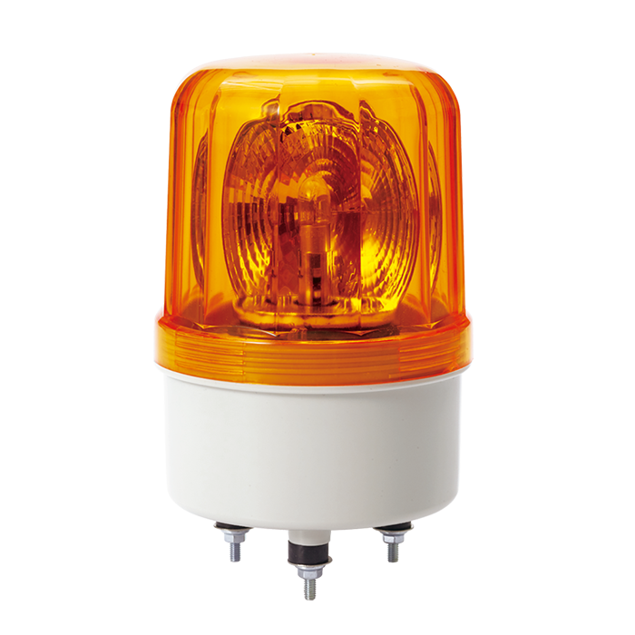 S100UAS Series (Ø100-125) | Ø100mm Bulb Revolving Warning Light Max.90dB | S Series (Ø100-125) | 32 |
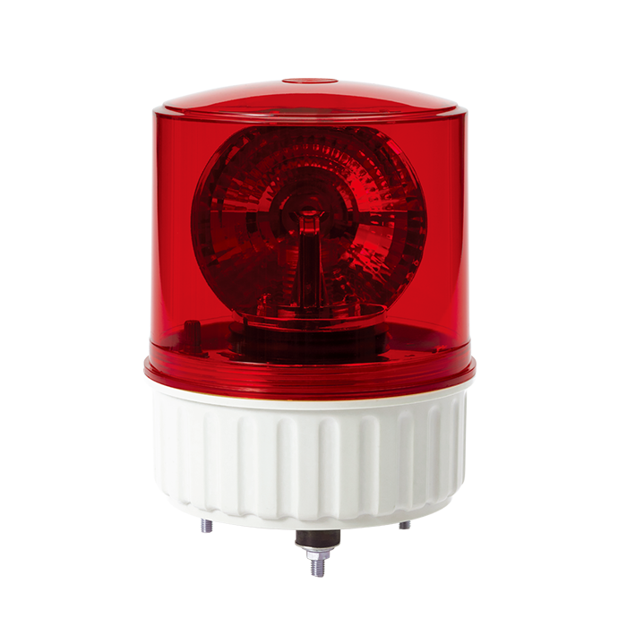 S125LRS Series (Ø100-125) | Ø125mm LED Revloving Warning Light Max.90dB | S Series (Ø100-125) | 32 |
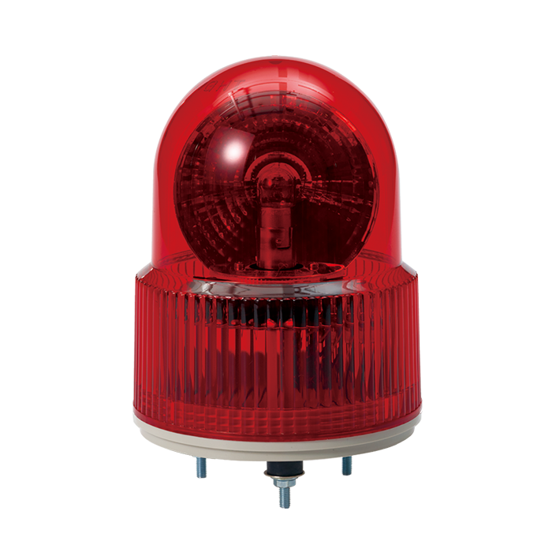 S125RS Series (Ø100-125) | Ø125mm Bulb Revolving Warning Light Max.90dB | S Series (Ø100-125) | 32 |
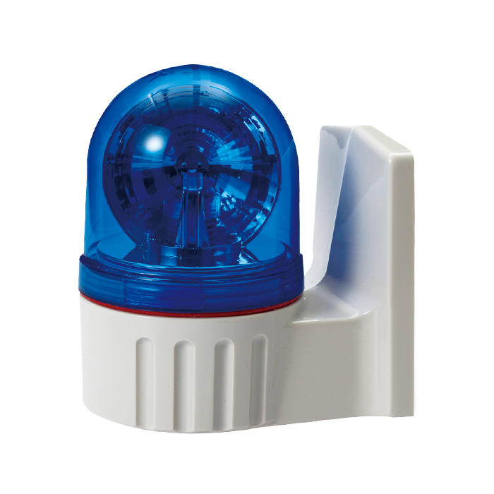 S80ADRS Series (Ø50-80) | Ø80mm LED Revolving Warning Light Max.90dB | S Series (Ø50-80) | 32 |
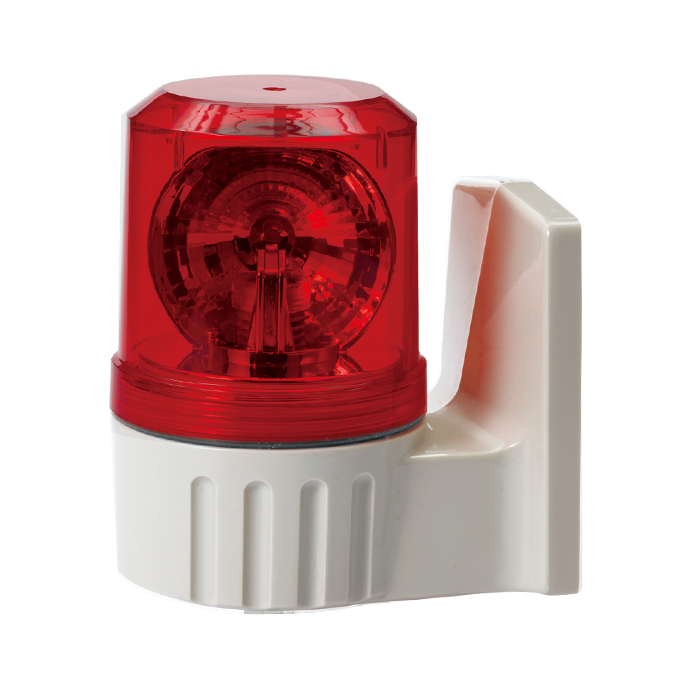 S80ALRS Series (Ø50-80) | Ø80mm LED Revolving Warning Light Max.90dB | S Series (Ø50-80) | 32 |
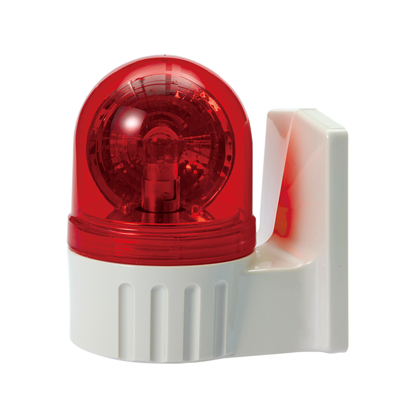 S80ARS Series (Ø50-80) | Ø80mm Bulb Revolving Warning Light Max.90dB | S Series (Ø50-80) | 32 |
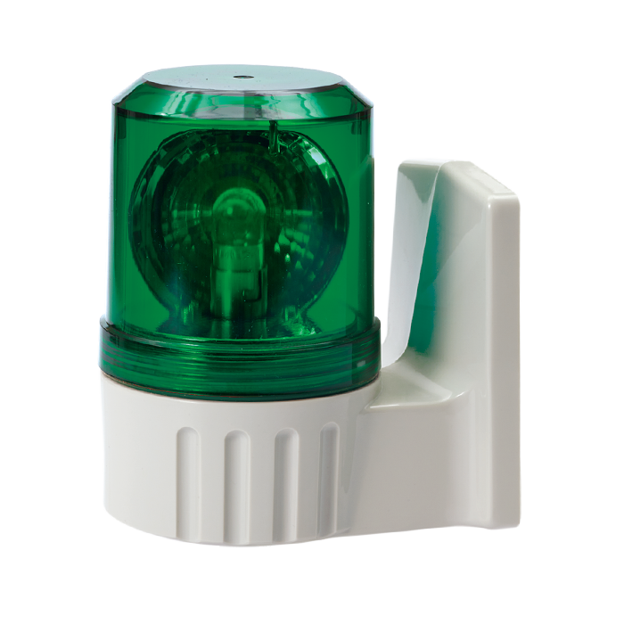 S80AUS Series (Ø50-80) | Ø80mm Bulb Revolving Warning Light Max.90dB | S Series (Ø50-80) | 32 |
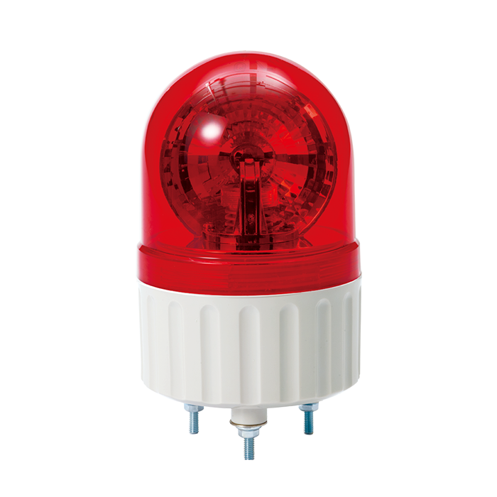 S80DRS Series (Ø50-80) | Ø80mm LED Revolving Warning Light Max.90dB | S Series (Ø50-80) | 32 |
| Ø80mm LED Revolving Warning Light Max.90dB | S Series (Ø50-80) | 32 |
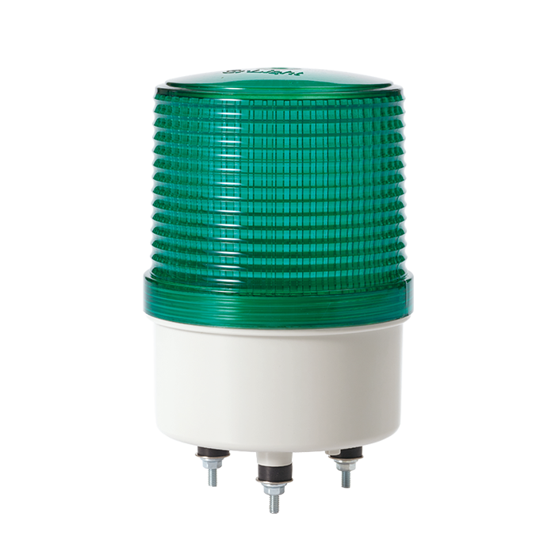 S100LS Series (Ø100-125) | Ø100mm LED Steady/Flashing Signal Light Max.90dB | S Series (Ø100-125) | 24 |
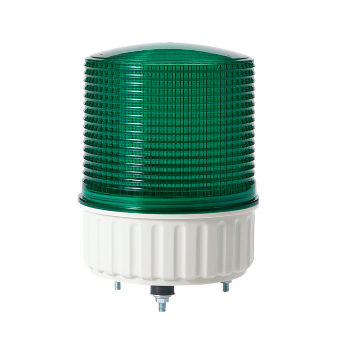 S125LS Series (Ø100-125) | Ø125mm LED Steady/Flashing Signal Light Max.90dB | S Series (Ø100-125) | 24 |
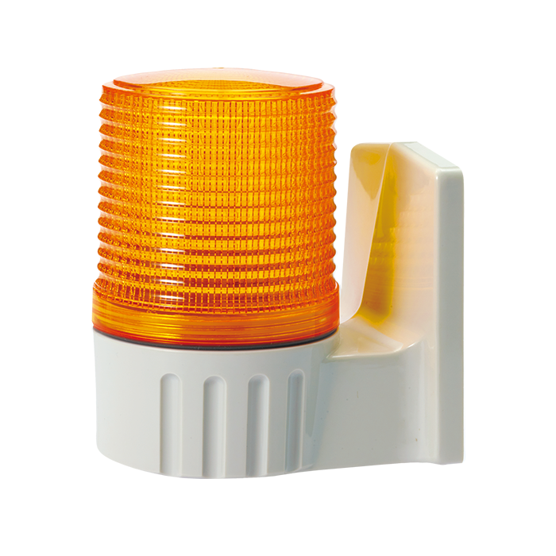 S80ALS Series (Ø50-80) | Ø80mm LED Steady/Flashing Signal Light Max.90dB | S Series (Ø50-80) | 24 |
| Ø80mm Xenon Lamp Strobe Light Max.90dB | S Series (Ø50-80) | 24 |
 S80LS Series (Ø50-80) S80LS Series (Ø50-80) | Ø80mm LED Steady/Flashing Signal Light Max.90dB | S Series (Ø50-80) | 24 |
| Ø100mm Multiple Color LED Steady/Flashing Signal Light Max.90dB | SMCL Series | 24 |
| Ø125mm Multi-Color LED Steady/Flashing LED Signal Light Max.90dB | SMCL Series | 24 |
| Ø80mm Multiple Color LED Steady/Flashing Signal Light Max.90dB | SMCL Series | 24 |
| Ø100mm LED Steady/Flashing Signal Light Max.80dB | Q Series | 16 |
| Ø100mm LED Steady/Flashing Signal Light Max.80dB | Q Series | 16 |
| Ø100mm LED Steady/Flashing Signal Max.80dB | Q Series | 16 |
| Ø125mm LED Steady/Flashing Signal Light Max.80dB | Q Series | 16 |
| Ø125mm LED Steady/Flashing Signal Light Max.80dB | Q Series | 16 |
| Ø125mm LED Steady/Flashing Signal Light Max.80dB | Q Series | 16 |
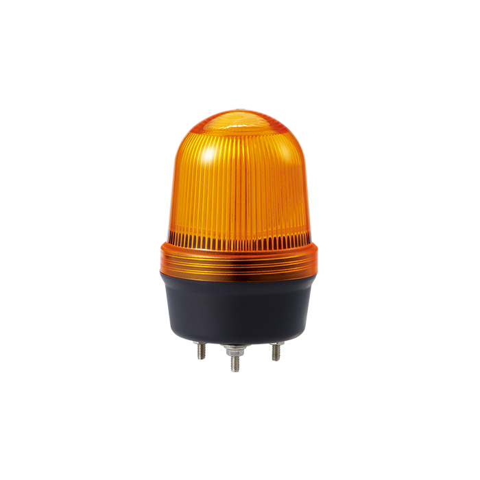 Q60LQ Series | Ø60mm LED Steady/Flashing Signal Light Max.80dB | Q Series | 16 |
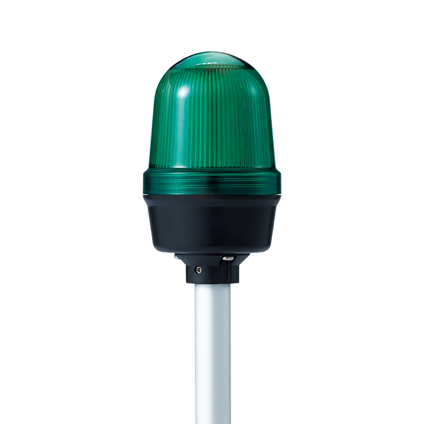 Q60LPQ Series | Ø60mm LED Steady/Flashing Signal Light Max.80dB | Q Series | 16 |
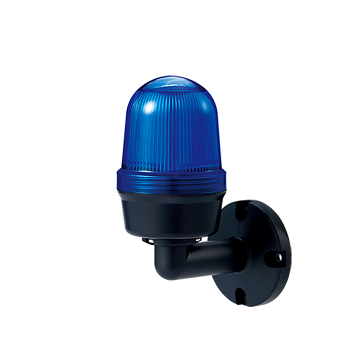 Q60LWQ Series | Ø60mm LED Steady/Flashing Signal Light Max.80dB | Q Series | 16 |
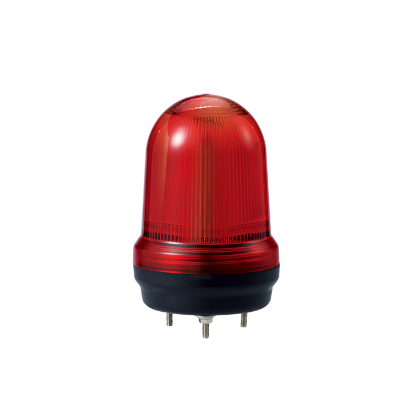 Q80LQ Series | Ø80mm LED Steady/Flashing Signal Light Max.80dB | Q Series | 16 |
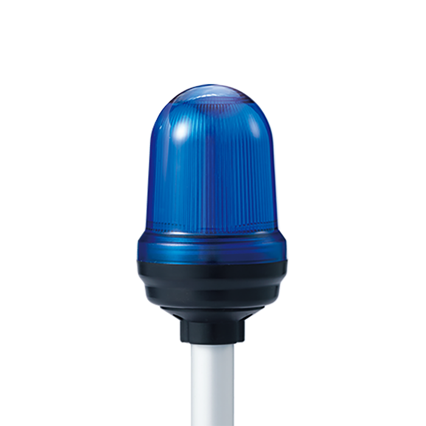 Q80LPQ Series | Ø80mm LED Steady/Flashing Signal Light Max.80dB | Q Series | 16 |
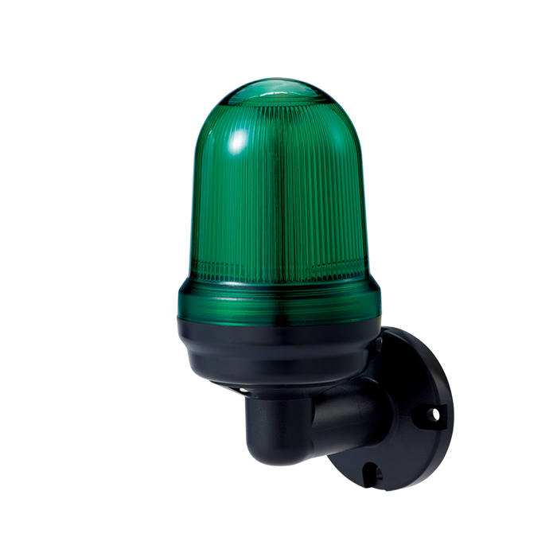 Q80LWQ Series | Ø80mm LED Steady/Flashing Signal Light Max.80dB | Q Series | 16 |
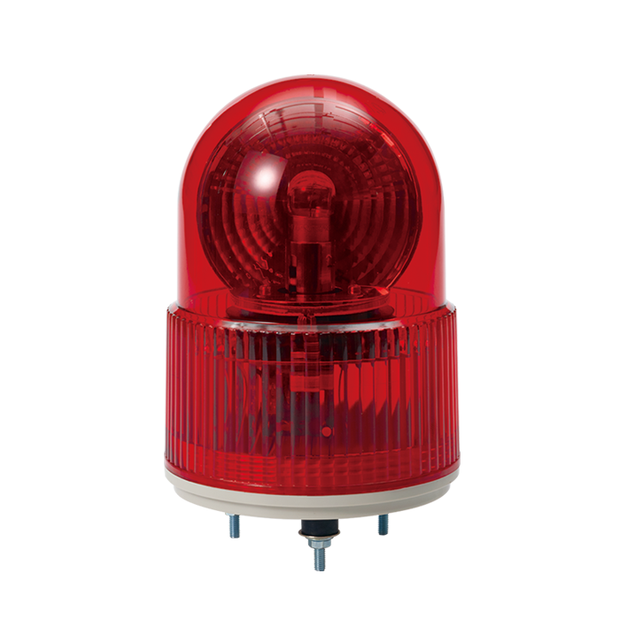 S100RS Series (Ø100-125) | Ø100mm Bulb Revolving Warning Light Max.90dB | S Series (Ø100-125) | 16 |
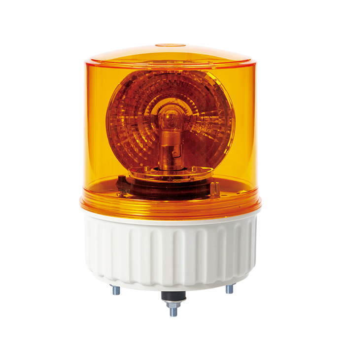 S125US Series (Ø100-125) | Ø125mm Bulb Revolving Warning Light Max.90dB | S Series (Ø100-125) | 16 |
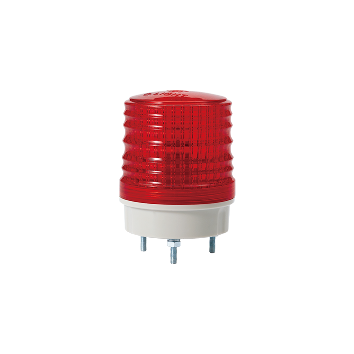 S50BS Series (Ø50-80) | Ø50mm Bulb Steady Signal Light | S Series (Ø50-80) | 16 |
| Bulb Steady/Flashing Signal Light with High Volume Built-in Buzzer Max.95dB | S60AD/QAD Series | 16 |
| LED Steady/Flashing Signal Light with High Volume Built-in Buzzer Max.95dB | S60AD/QAD Series | 16 |
| Xenon Lamp Strobe Signal Light with High Volume Built-in Buzzer Max.95dB | S60AD/QAD Series | 16 |
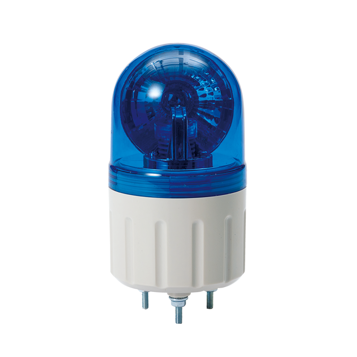 S60LRS Series (Ø50-80) | Ø60mm LED Revolving Warning Light | S Series (Ø50-80) | 16 |
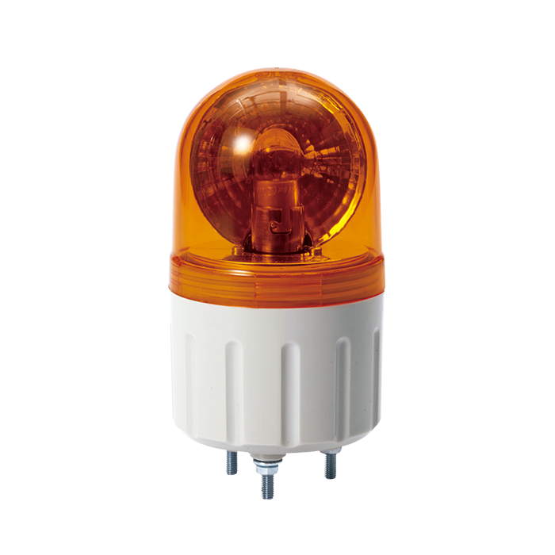 S60RS Series (Ø50-80) | Ø60mm Bulb Revolving Warning Light | S Series (Ø50-80) | 16 |
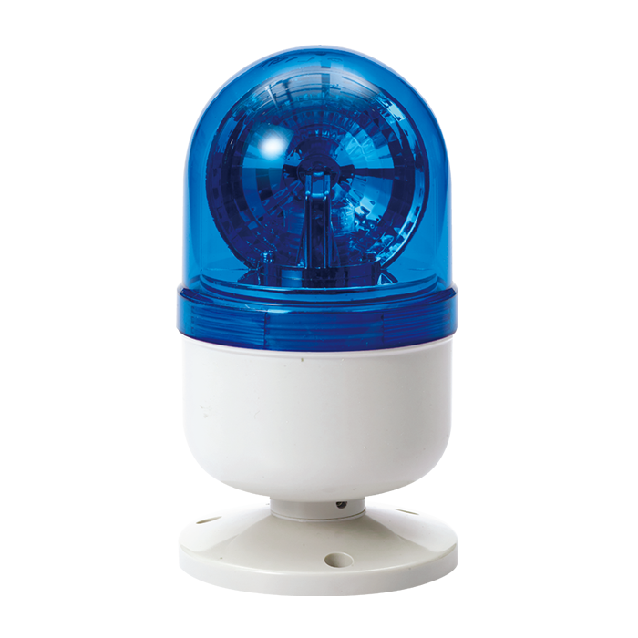 S80DRKS Series (Ø50-80) | Ø80mm LED Revolving Warning Light | S Series (Ø50-80) | 16 |
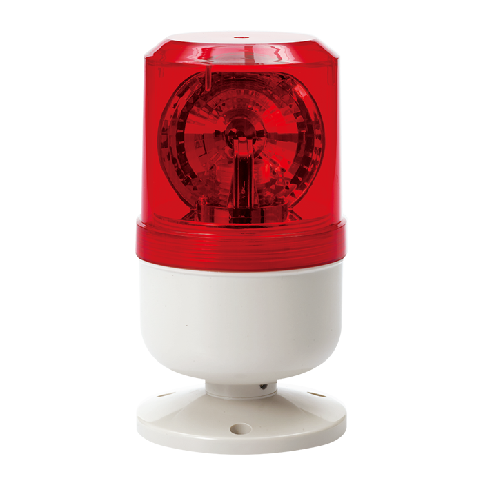 S80LRKS Series (Ø50-80) | Ø80mm LED Revlolving Warning Light | S Series (Ø50-80) | 16 |
 S80RS Series (Ø50-80) S80RS Series (Ø50-80) | Ø80mm Bulb Revolving Warning Light Max.90dB | S Series (Ø50-80) | 16 |
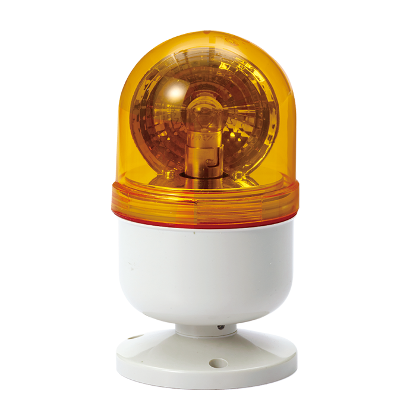 S80RKS Series (Ø50-80) | Ø80mm Bulb Revolving Warning Light | S Series (Ø50-80) | 16 |
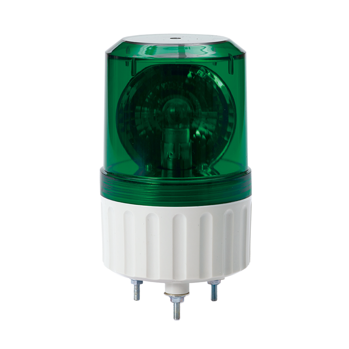 S80US Series (Ø50-80) | Ø80mm Bulb Revolving Warning Light Max.90dB | S Series (Ø50-80) | 16 |
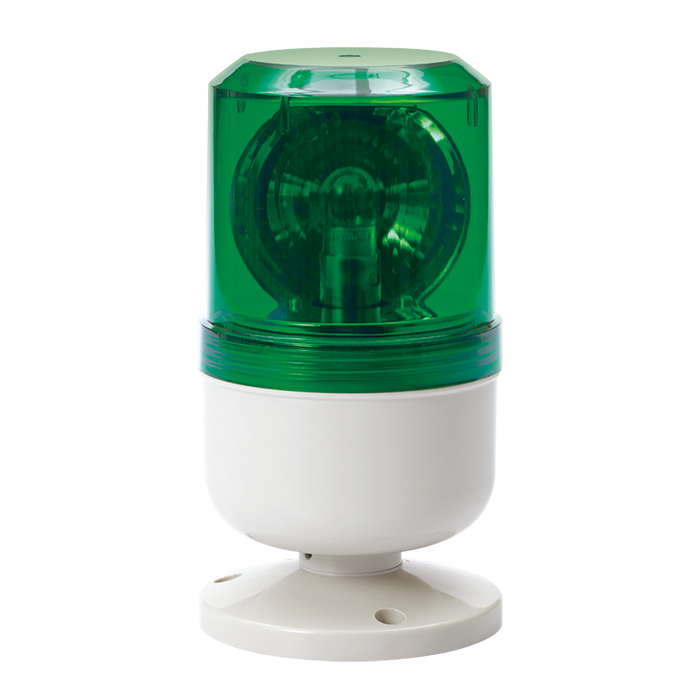 S80UKS Series (Ø50-80) | Ø80mm Bulb Revolving Warning Light | S Series (Ø50-80) | 16 |
| Built-in high-volume buzzer LED strobe light Max.115dB | QWH/QWCD Series | 13 |
| LED Strobe Warning Light Bar for Road Safety Max.126dB | EL Series | 12 |
| LED Strobe Warning Light Bar for Road Safety Max.126dB | EL Series | 12 |
| LED Strobe Warning Light Bar for Road Safety Max.126dB | EL Series | 12 |
| LED Strobe Warning Light Bar for Road Safety Max.126dB | EL Series | 12 |
| LED Strobe Warning Light Bar for Road Safety Max.126dB | EL Series | 12 |
| Wall Mount Type LED Steady/Flash & Strong Buzzer Max.105dB | S60AD/QAD Series | 12 |
| Wall Mount Type LED Steady/Flash & Strong Buzzer Max.105dB | S60AD/QAD Series | 12 |
| Built-in high-volume buzzer LED strobe light Max.115dB | QWH/QWCD Series | 12 |
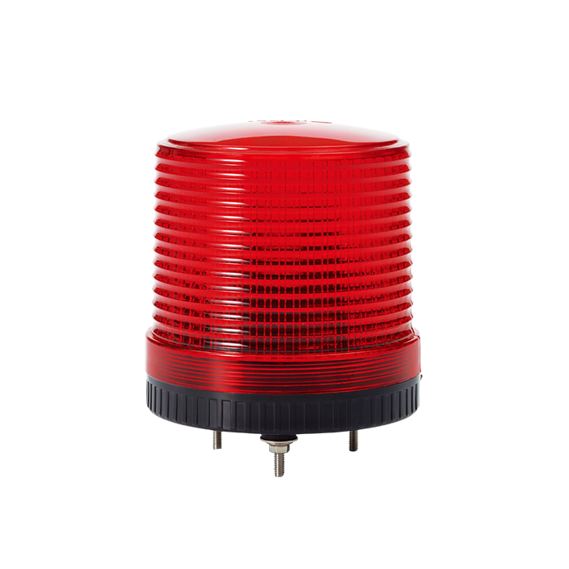 S100SS Series (Ø100-125) | Ø100mm Xenon Lamp Strobe Light | S Series (Ø100-125) | 12 |
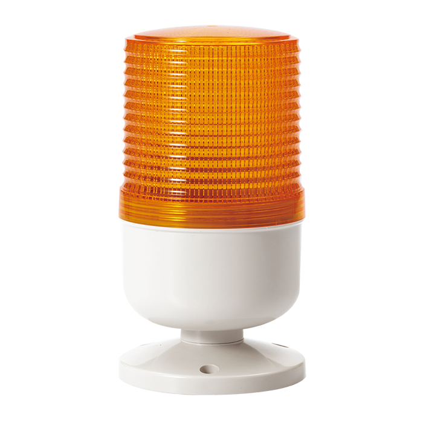 S80LKS Series (Ø50-80) | Ø80mm LED Steady/Flashing Signal Light | S Series (Ø50-80) | 12 |
 S80SS Series (Ø50-80) S80SS Series (Ø50-80) | Ø80mm Xenon Lamp Strobe Light | S Series (Ø50-80) | 12 |
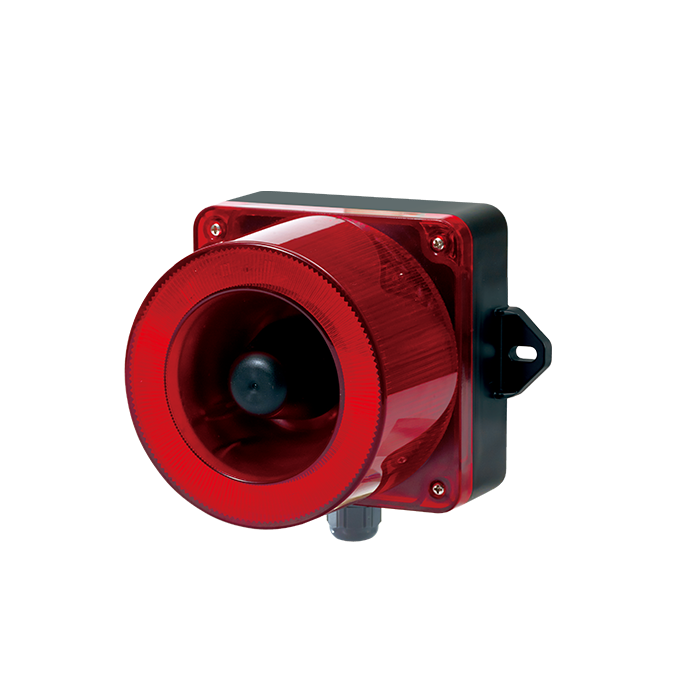 QWCD35QWH/QWCD Series | LED Strobe Signal Beacon & Electronic Sounder Combinations Weatherproof LED Strobe Beacon Sounder / Audible & Visual Ala | QWH/QWCD Series | 10 |
| — | S Series (Ø100-125) | 8 |
| — | S Series (Ø100-125) | 8 |
| Ø100mm Multiple Function LED Signal Light Max.80dB | MFL Series | 8 |
| Ø125mm Multiple Function LED Signal Light Max.80dB | MFL Series | 8 |
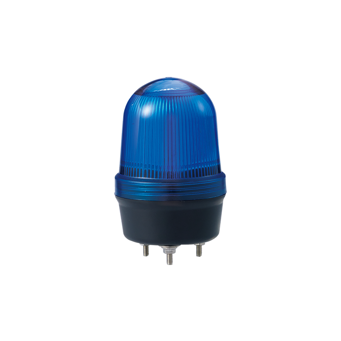 MFL60MFL Series | Ø60mm Multiple Function LED Signal Light Max.80dB | MFL Series | 8 |
| Ø80mm Multiple Function LED Signal Light Max.80dB | MFL Series | 8 |
| Wall Mount Type LED Steady/Flash & Strong Buzzer Max.105dB | S60AD/QAD Series | 8 |
| LED Strobe Signal Beacon & Electronic Sounder Combinations Weatherproof LED Strobe Beacon Sounder / Audible & Visual Ala | QWH/QWCD Series | 8 |
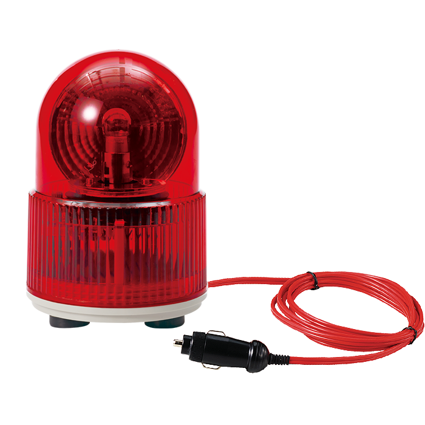 S100MS Series for vehicle | Ø100mm Bulb Revolving Signal Light for Vehicle Max.90dB | S Series for vehicle | 8 |
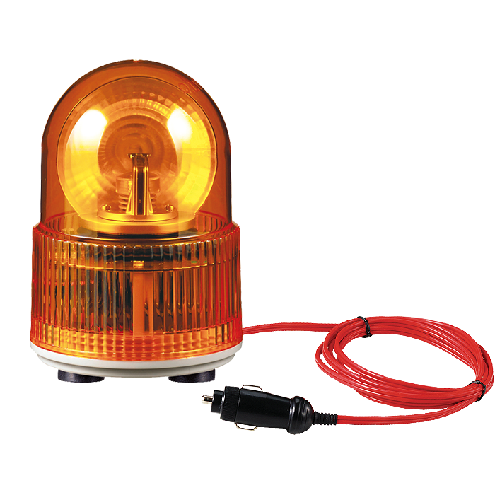 S100MLRS Series for vehicle | Ø100mm LED Revolving Warning Light for Vehicle Max.90dB | S Series for vehicle | 8 |
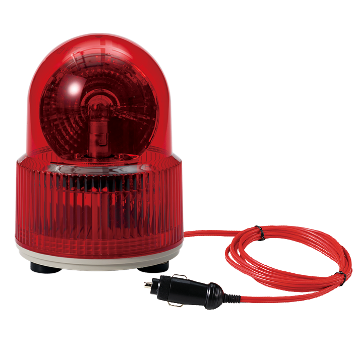 S125MS Series for vehicle | Ø125mm Bulb Revolving Warning Light for Vehicle Max.90dB | S Series for vehicle | 8 |
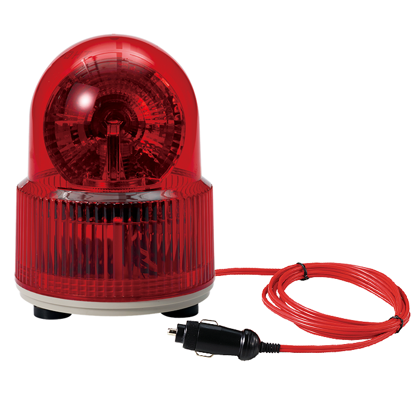 S125MLRS Series for vehicle | Ø125mm LED Revolving Warning Lights for Vehicle Max.90dB | S Series for vehicle | 8 |
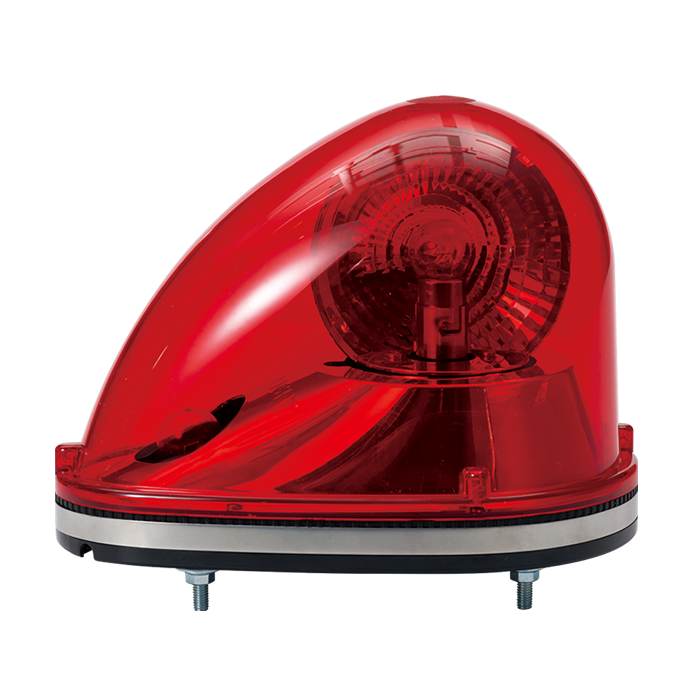 SKS Series (Ø100-125) | Streamline Bulb Revolving Warning Light | S Series (Ø100-125) | 8 |
| Streamline Bulb Revolving Warning Light | S Series (Ø100-125) | 8 |
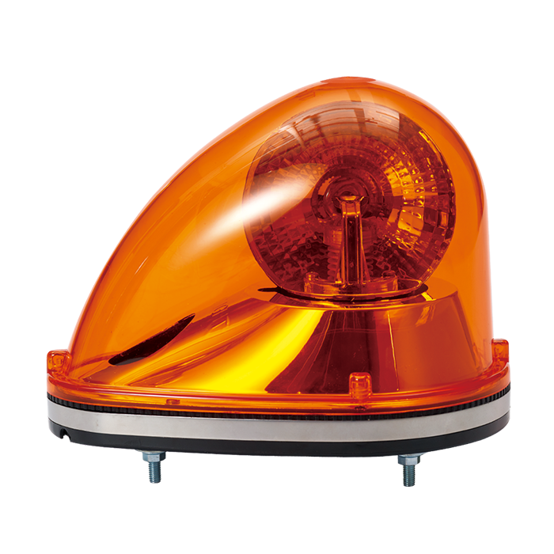 SKLRS Series (Ø100-125) | Streamline LED Revolving Warning Light | S Series (Ø100-125) | 8 |
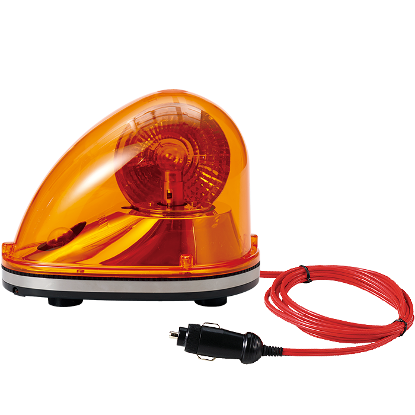 SKMS Series for vehicle | Stremlined Bulb Revolving Warning Light with Magnet | S Series for vehicle | 8 |
| Stremlined Bulb Revolving Warning Light with Magnet | S Series for vehicle | 8 |
SKMLRS Series for vehicle | Streamlined LED Revolving Warning Light with Magnet | S Series for vehicle | 8 |
| Alarm Bells with Lamp for Vessels and Heavy Industrial Applications Max.95dB | SAB Series | 6 |
| Alarm Bells with Lamp for Vessels and Heavy Industrial Applications Max.95dB | SAB Series | 6 |
| Cubic LED Warning Light for Vehicle | S Series (Ø100-125) | 5 |
| Cubic LED Warning Lights for Vehicles Max.105dB | S Series (Ø100-125) | 5 |
| Cubic LED Warning Lights for Vehicle Max.105dB | S Series for vehicle | 5 |
SKTLMS Series for vehicle | Cubic LED Warning Lights for Vehicle | S Series for vehicle | 5 |
| Motor Siren Max.110dB | SM Series | 5 |
| Motor Siren Max.116dB | SM Series | 5 |
| LED Strobe Warning Light Bar | QLV Series | 4 |
| LED Strobe Warning Light Bar | QLV Series | 4 |
| LED Strobe Warning Light Bar | QLV Series | 4 |
| LED Strobe Warning Light Bar | QLV Series | 4 |
| LED Strobe Warning Light Bar | QLV Series | 4 |
| LED Strobe Warning Light Bar | QLV Series | 4 |
| Ø100mm Multiple Colors LED Steady Signal Light Max.80dB | QMCL Series | 4 |
| Ø125mm Multiple Colors LED Steady Signal Light Max.80dB | QMCL Series | 4 |
| Ø60mm Multiple Color LED Steady Signal Light Max.80dB | QMCL Series | 4 |
| Ø80mm Multiple Color LED Steady Signal Light Max.80dB | QMCL Series | 4 |
| Wall mounted type electronic sounder with high volume Max.115dB | QWH/QWCD Series | 4 |
| Ø125mm LED Strobe Signal Lights | S Series (Ø100-125) | 4 |
| Ø50mm LED Steady/Flashing Signal Light | S Series (Ø50-80) | 4 |
| Wall Mounted High Buzzer Horn Max.95dB | QAP/ADH Series | 4 |
| Ø80mm LED Strobe Signal Light for Forklift | S Series (Ø50-80) | 4 |
| Ø80mm LED Steady Signal Light | S Series (Ø50-80) | 4 |
| Ø80mm LED strobe signal light | S Series (Ø50-80) | 4 |
| LED strobe light for heavy equipment | S Series (Ø50-80) | 4 |
| Heavy Duty Motor Siren for Heavy Industrial Applications Alarm Horns & Sirens / Audible Alarm Max.120dB | SM Series | 4 |
| Heavy Duty Motor Siren for Heavy Industrial Applications Alarm Horns & Sirens / Audible Alarm Max.123dB | SM Series | 4 |
| Panel Mounted Speaker Max.90dB | SPK/QMPS Series | 4 |
| Panel Mounted Speaker Max.90dB | SPK/QMPS Series | 4 |
| High Siren Buzzer, Wall Mount Type Max.105dB | QAP/ADH Series | 3 |
| High Siren Buzzer, Wall Mount Type Max.105dB | QAP/ADH Series | 3 |
| Wall Mount Electronic Sounders with Pre-recorded Special Warning Sound Weatherproof Alarm Horns & Sirens / Audible Alarm | QWH/QWCD Series | 3 |
| Wall mounted type electronic sounder with high volume Max.115dB | QWH/QWCD Series | 3 |
| Wall Mount Electronic Sounders with Pre-recorded Special Warning Sound Weatherproof Alarm Horns & Sirens / Audible Alarm | QWH/QWCD Series | 3 |
| Heavy Duty Air Horns for Marine and Heavy Industrial Applications Weatherproof Alarm Horns Sounder / Audible Alarm Max.1 | SANA/QEB Series | 3 |
| General Electric Horn Max.108dB | SRN/SEN/SMP Series | 3 |
| Signal phone for CAN communication panel Max.90dB | SPK/QMPS Series | 2 |
| Signal phone for RS485 communication panel Max.90dB | SPK/QMPS Series | 2 |
| Electric Horn, Wall Mount Type Max.100dB | QAP/ADH Series | 2 |
| Electric Horn, Wall Mount Type Max.100dB | QAP/ADH Series | 2 |
| Electric Horn, Wall Mount Type Max.115dB | QAP/ADH Series | 2 |
| Electric Horn, Wall Mount Type Max.115dB | QAP/ADH Series | 2 |
| High Siren Buzzer, Wall Mount Type Max.105dB | QAP/ADH Series | 2 |
| Panel Mounted Multi-Functional Speaker Max.95dB | SPK/QMPS Series | 2 |
| Panel Mount Audible Alarm | SPK/QMPS Series | 2 |
| Wall Mount Electronic Sounders with Pre-recorded Special Warning Sound Weatherproof Alarm Horns & Sirens / Audible Alarm | QWH/QWCD Series | 2 |
| Wall Mount Electronic Sounders with Pre-recorded Special Warning Sound Weatherproof Alarm Horns & Sirens / Audible Alarm | QWH/QWCD Series | 2 |
| Ø100mm Solar Rechargeable LED Flashing Signal Light | SOL Series | 2 |
| Ø125mm Solar Rechargeable LED Flashing Signal Light | SOL Series | 2 |
| Ø80mm Solar Rechargeable LED Flashing Signal Light | SOL Series | 2 |
| Alarm Bells with Lamp for Vessels and Heavy Industrial Applications Max.95dB | SAB Series | 2 |
| Controllable AMP for Warning Light Bar | EL Series | 2 |
| Self Stand Multi-Functional Electric Horn Max.115dB | SRN/SEN/SMP Series | 2 |
| Self stand type Electronic Sounder Max.115dB | SRN/SEN/SMP Series | 2 |
| Self Stand Multi-Functional Electric Horn Max.123dB | SRN/SEN/SMP Series | 2 |
| Self stand type Electronic Sounder Max.123dB | SRN/SEN/SMP Series | 2 |
| Signal phone for multi-channel panel Max.90dB | SPK/QMPS Series | 1 |
| Solar Powered Warning Light Bar | EL Series | 1 |
| Electric Horn, Wall Mounted Type Max.100dB | QAP/ADH Series | 1 |
| Explosion Proof Solenoid Valve Box | SANA/QEB Series | 1 |
| Ø125mm Wireless Multiple Color LED Steady Signal Lights Max.80dB | QMCL-WIZ Series | 1 |
| LED Strobe Signal Beacon & Electronic Sounder Combinations Weatherproof LED Strobe Beacon Sounder / Audible & Visual Ala | QWH/QWCD Series | 1 |
| Controllable AMP for QLV Warning Light Bar | QLV Series | 1 |
| Wall Mount Electronic Sounders with Pre-recorded Special Warning Sound Max.115dB | SN/SEHN Series | 1 |
| Wall Mount Electronic Sounders with Pre-recorded Special Warning Sound Max.118dB | SN/SEHN Series | 1 |
| Electronic Sounders for Vessels and Heavy Industrial Applications Weatherproof Alarm Horns & Sirens / Audible Alarm Max. | SEWN/SHDN Series | 1 |
| Electronic Sounders for Vessels and Heavy Industrial Applications Max.120dB | SEWN/SHDN Series | 1 |
| Dual-Facing Heavy Duty Electronic Sounders for Marine and Heavy Industrial Applications Weatherproof Alarm Horns & Siren | SEWN/SHDN Series | 1 |
| Horn for QLV Warning Light Bars Max.135dB | QLV Series | 1 |
| Wall Mount Electronic Sounders with Pre-recorded Special Warning Sound Max.100dB | SN/SEHN Series | 1 |
| Wall Mount Type LED Steady/Flash & Electric Horn Max.100dB | S60AD/QAD Series | — |
| LED Steady/Flashing & Electronic sounder, wall mounted type Max.100dB | S60AD/QAD Series | — |
| Wall Mount Type LED Steady/Flash & Electric Horn Max.100dB | S60AD/QAD Series | — |
| LED Steady/Flashing & Electronic sounder, wall mounted type Max.115dB | S60AD/QAD Series | — |
| Wall Mount Type LED Steady/Flash & Electric Horn Max.100dB | S60AD/QAD Series | — |
| Low Intensity LED Aviation Obstruction Light | QAOL Series | — |
| LED flash indicator Max.65dB | Q Series | — |
| LED Strobe Light Bar SET Max.135dB | QLV Series | — |
| LED Strobe Signal Beacon & Electronic Sounder Combinations Weatherproof LED Strobe Beacon Sounder / Audible & Visual Ala | QWH/QWCD Series | — |
| Wall Mount LED Signal Tower with Built-in Siren Max.85dB | QWTD Series | — |
S100DS100D/S125D/STD Series | Bulb Revolving Light & Electric Horn Max.105dB | S100D/S125D/STD Series | — |
| LED Steady/Flashing Light & Electric Horn Max.105dB | S100D/S125D/STD Series | — |
| LED Revolving Light & Electric Horn Max.105dB | S100D/S125D/STD Series | — |
| Xenon Lamp Strobe Light & Electric Horn Max.105dB | S100D/S125D/STD Series | — |
| Ø100mm Magnet Mount Xenon Lamp Strobe Signal Light | S Series for vehicle | — |
S125DS100D/S125D/STD Series | Bulb Revolving Light & Electric Horn Max.105dB | S100D/S125D/STD Series | — |
| LED Steady/Flashing Light & Electric Horn Max.105dB | S100D/S125D/STD Series | — |
| LED Revolving Light & Electric Horn Max.105dB | S100D/S125D/STD Series | — |
| Multifunctional LED beacon with built-in signal sound Max.105dB | S100D/S125D/STD Series | — |
| Xenon Lamp Strobe Light & Electric Horn Max.105dB | S100D/S125D/STD Series | — |
| Ø125mm Xenon Lamp Strobe Light | S Series (Ø100-125) | — |
| Ø125mm Magnet Mount Xenon Strobe Signal Light | S Series for vehicle | — |
| Ø125mm Large-Sized Stackable Signal Lights | S125T Series | — |
| Ø150mm Bulb Revolving Warning Light Max.90dB | S Series (Ø150-180) | — |
| Ø150mm Bulb Revolving Warning Light Max.90dB | S Series (Ø150-180) | — |
| Ø150mm LED Steady/Flashing Signal Light Max.90dB | S Series (Ø150-180) | — |
| Ø150mm LED Steady/Flashing Signal Light Max.90dB | S Series (Ø150-180) | — |
| Ø150mm LED Revolving Warning Light Max.90dB | S Series (Ø150-180) | — |
| Ø150mm LED Revolving Warning Light Max.90dB | S Series (Ø150-180) | — |
| Ø150mm Xenon Lamp Strobe Light Max.90dB | S Series (Ø150-180) | — |
| Ø150mm Xenon Lamp Strobe Light Max.90dB | S Series (Ø150-180) | — |
| Ø180mm Bulb Revolving Warning Light Max.90dB | S Series (Ø150-180) | — |
| Ø180mm Hyper Brightness Xenon Lamp Strobe Signal Light Max.90dB | S Series (Ø150-180) | — |
| Ø180mm Xenon Lamp Strobe Light Max.90dB | S Series (Ø150-180) | — |
| Ø60mm LED Steady/Flashing Signal Light | S Series (Ø50-80) | — |
S80SMS Series for vehicle | Ø80mm Xenon Lamp Strobe Light Equipped with Magnet | S Series for vehicle | — |
| Heavy Duty Air Horns for Marine and Heavy Industrial Applications Weatherproof Alarm Horns Sounder / Audible Alarm Max.1 | SANA/QEB Series | — |
| Heavy Duty Air Horns for Marine and Heavy Industrial Applications Weatherproof Alarm Horns Sounder / Audible Alarm Max.1 | SANA/QEB Series | — |
| General Electric Horn Max.115dB | SRN/SEN/SMP Series | — |
| Electronic Sounders for Vessels and Heavy Industrial Applications Max.114dB | SEWN/SHDN Series | — |
| Electronic Sounders for Vessels and Heavy Industrial Applications Max.114dB | SEWN/SHDN Series | — |
| Electronic Sounders for Vessels and Heavy Industrial Applications Max.120dB | SEWN/SHDN Series | — |
| Electronic Sounders for Vessels and Heavy Industrial Applications Max.120dB | SEWN/SHDN Series | — |
| Bulb Revolving Tower Warning Lights Max.90dB | SJ Series | — |
| Stackable Cube Tower Lights with Built-in Alarm Max.90dB | SJD Series | — |
| Stackable Cube Tower Lights with Built-in Alarm Max.90dB | SJD Series | — |
| LED Steady/Flashing Tower Signal Lights Max.90dB | SJ Series | — |
| LED Steady/Flashing Tower Signal Lights Max.90dB | SJ Series | — |
| Bulb Revolving Tower Warning Lights Max.90dB | SJ Series | — |
| Streamlined Bulb Revolving Warning Light with Magnet | S Series for vehicle | — |
| Streamlined LED Revolving Warning Light with Magnet | S Series for vehicle | — |
| Ø80mm Multiple Color LED Steady/Flashing Signal Light Max.90dB | SMCL Series | — |
 SRSR Series SRSR Series | Bulb Revolving Tower Warning Lights | SR Series | — |
| LED Steady/Flashing Signal Towers | SR Series | — |
| LED Steady/Flashing Signal Towers | SR Series | — |
| Bulb Revolving Tower Warning Lights | SR Series | — |
STDLS100D/S125D/STD Series | LED Steady/Flashing Tower Light & Electric Horn Max.105dB | S100D/S125D/STD Series | — |
| LED Steady/Flashing Signal Light & Electric Horn Combination Max.105dB | STND Series | — |
| LED Steady/Flashing & Electronic sounder Max.105dB | STND Series | — |
| LED Revolving Signal Light & Electric Horn Combination Max.105dB | STND Series | — |
| LED Revolving Signal Beacon & Electronic sounder Max.105dB | STND Series | — |
| Bulb Revolving Signal Light & Electric Horn Combination Max.105dB | STND Series | — |
| Bulb Revolving Signal Beacon & Electronic sounder Max.105dB | STND Series | — |
| LED Steady/Flashing Signal Light & Electric Horn Combination Max.105dB | STND Series | — |
| LED Steady/Flashing & Electronic sounder Max.105dB | STND Series | — |
| LED Revolving Signal Light & Electric Horn Combination Max.105dB | STND Series | — |
| LED Revolving Signal Beacon & Electronic sounder Max.105dB | STND Series | — |
| Bulb Revolving Signal Light & Electric Horn Combination Max.105dB | STND Series | — |
| Bulb Revolving Signal Beacon & Electronic sounder Max.105dB | STND Series | — |
| LED Steady/Flashing Lights & Electric Horn Max.105dB | STND Series | — |
| LED Steady/Flashing Lights & Electric Horn Max.105dB | STND Series | — |
| Wall Mounting Multiple Color LED Steady/Flashing Signal Lights Max.90dB | SWTC Series | — |
| Wall Mounting Multiple Color LED Steady/Flashing Signal Lights Max.90dB | SWTC Series | — |